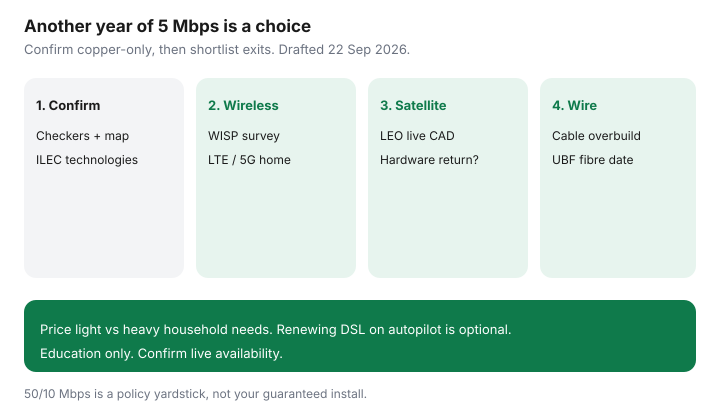

Internet · Canada
Stuck on Slow DSL in Canada? Upgrade Paths That Beat Another Year of 5 Mbps
Five megabits on copper survives another year because renewing DSL is familiar. Video calls freeze, backups never finish, and the household shrugs. Canadian DSL-only addresses still exist in rural and older suburban pockets even when the town centre has fibre marketing. This guide is the exit path: confirm you are truly stuck on copper, then shortlist fixed wireless, LTE/5G home, satellite, and any cable or fibre overbuild — with cost-versus-need math for light and heavy homes.
Disclosure: Education only. ISP technologies and plans are offer types. Saving Optimizer does not claim a partnership with any ILEC, WISP, or satellite brand. Speeds and prices are address-specific. Confirm live.
Key takeaways
- Re-check availability every six months. Overbuilds and UBF projects appear without a flyer on your pole.
- Ask the incumbent what is provisioned at the cable or pair — not what the homepage sells for your town name.
- Bridge options: WISP, LTE/5G home, LEO satellite. Each has different failure modes.
- Match spend to household load. A light email home does not need the same bridge as two 4K streams and WFH.
- Ask about copper retirement or fibre migration notices so you are not surprised by a forced change.
Confirm you are truly DSL-only at the address
- Run Big-3, cable, and independent checkers with the civic address and unit or farm number.
- Check ISED’s National Broadband Map for reported technologies.
- Call the ILEC and ask: “What technologies can you provision to this cable/pair today — DSL only, bonded, fibre, or fixed wireless?” Get names in email.
- Ask a reseller (TekSavvy-class) what the wholesale feed is at your address; sometimes their tool shows a door the retail brand under-markets.
If fibre or cable is orderable, stop calling yourself DSL-only and price the wire with the fibre vs cable lens.

Fixed wireless, LTE/5G home, and satellite options
| Path | Ask first | Guide |
|---|---|---|
| Fixed wireless / WISP | Site survey, evening speed, term | WISP vetting |
| LTE / 5G home | Address qualification, allotment after threshold | 5G home |
| LEO satellite | Live CAD, trees, hardware return | Starlink vs rural |
Cable/fibre overbuilds to watch for
- Cable coax expansions on rural edges of towns.
- UBF or provincial fibre laterals — status check.
- Municipal or Indigenous network builds announced at council.
- New reseller availability when wholesale open-access lights up.
Set a six-month calendar reminder. Map layers change faster than bill stuffers.
Cost vs speed trade-offs for light vs heavy households
| Household | DSL pain | Bridge bias |
|---|---|---|
| Light (email, one stream) | Occasional stalls | Cheapest stable 25+ Mbps class with honest cap |
| Medium (WFH video + stream) | Upload and evening congestion | Prioritise upload and peak tests; mid-tier wireless or LEO |
| Heavy (two WFH, 4K, cloud backup) | Unusable evenings | Fibre waitlist with strong bridge; avoid renewing 5 Mbps |
Use the speed worksheet so you do not buy a sticker you cannot use on Wi-Fi.
Questions for ILECs about copper retirement
- Is this wireline marked for fibre migration or copper withdrawal?
- What written notice will customers receive, and what replacement product is offered?
- Will DSL pricing rise or support end before a fibre drop is ready?
- Is there a temporary fixed-wireless product from the same brand?
Keep answers in email. Verbal “you’re fine for years” is not a plan.
An upgrade shortlist worksheet
| Option | Download / upload | 24-month CAD | Exit flexibility |
|---|---|---|---|
| Stay on DSL | |||
| WISP | |||
| LTE / 5G home | |||
| Satellite | |||
| Cable / fibre (if any) |
Pick the row that meets need at the lowest committed cost — then put the next map check on the calendar.
Sources & date stamps
- CRTC broadband objective / 50/10 Mbps policy yardstick — commonly cited consumer framing; re-read context 22 Sep 2026. Not a guarantee at your address.
- ISED National Broadband Map — technology availability layers; confirm live.
- ILEC copper migration practices vary by company and region — ask for written notices; no national retirement date claimed here.
Frequently asked questions
How do I know I am really DSL-only?
Run every major checker at the unit or farm address, ask the ILEC what technologies are provisioned, and check the National Broadband Map. Marketing that says fibre in town may still leave your lateral on copper.
Is 5 Mbps enough in 2026?
For one light user, maybe. For two video streams, cloud backups, or WFH video, it fails often. The CRTC’s widely cited broadband objective uses 50/10 Mbps as a policy target — use that as a yardstick, not a promise.
Will the phone company retire my copper?
Some ILECs plan fibre migrations or copper withdrawals on timelines that vary by region. Ask for written notices and what replacement product you will be offered.
Should I renew my DSL promo for another year?
Only after you price at least one wireless-home or satellite bridge and confirm no overbuild date. Inertia is the expensive option.
Is this page selling a specific upgrade ISP?
No. Offer types only. Education only.